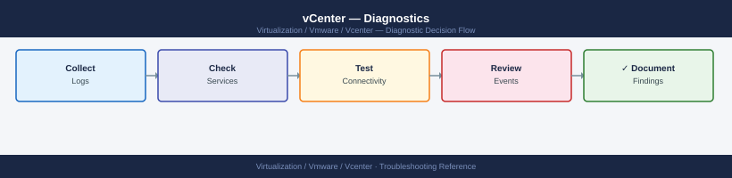

vCenter — Diagnostics¶

Before you begin¶
- Access: SSH to the VCSA appliance (root or administrator); vSphere Client admin credentials; VAMI access at
https://<vcenter>:5480 - Gather first: the specific symptom (login failure, host disconnect, slow UI, task error), the affected object name or user account, and when the issue started
- Scope: confirm whether the issue affects one user, one host, one cluster, or the entire vCenter
Step 1 — Check disk partitions and service health¶
Full partitions are the most common cause of cascading vCenter failures. Check before and after any service restart.
root@vcenter-01.corp.local's password:
Welcome to VCSA 7.0.3 Build 21958099
Last login: Wed Jan 15 14:22:33 2025 from 192.168.1.50
root@vcenter-01 [ ~ ]# df -h
Filesystem Size Used Avail Use% Mounted on
/dev/mapper/root_vg-root 50G 38G 9.2G 82% /
/dev/mapper/root_vg-log 20G 12G 6.8G 62% /var/log
/dev/mapper/root_vg-seat 10G 8.2G 1.4G 84% /storage/seat
/dev/mapper/root_vg-core 30G 26G 2.8G 91% /storage/core
/dev/sda1 512M 312M 200M 61% /boot
tmpfs 32G 0 32G 0% /dev/shm
root@vcenter-01 [ ~ ]#
Common errors
ssh: connect to host <vcenter-ip> port 22 (Connection refused) — Verify SSH is enabled on VCSA (Administration > System Configuration > Services) and the IP address is correct.
Permission denied (publickey,password). — Confirm you are using the root account (not a domain user) and the VCSA root password is correct.
Key partitions and alert thresholds:
| Partition | Purpose | Alert Threshold |
|---|---|---|
/storage/log |
vCenter and service logs | 80% |
/storage/db |
vCenter PostgreSQL database | 80% |
/storage/core |
Core appliance data, config | 80% |
/storage/seat |
Stats, events, alarms, and tasks DB | 80% |
/ |
Root filesystem | 85% |
# All vCenter service status
vmon-cli -l
# Expected: all services RUNNING
# Problem: any service STOPPED — note which service
# Recent service events (for any stopped service)
journalctl -u vmware-vpxd -n 100 --no-pager | grep -i "error\|fail\|crash"
journalctl -u vmware-stsd -n 100 --no-pager | grep -i "error\|fail"
# Service-level status summary
service-control --status --all | grep -v RUNNING
# Clear old compressed logs if /storage/log is full
find /var/log/vmware -name "*.gz" -mtime +30 -delete
find /storage/log -name "*.gz" -mtime +30 -delete
Service Running Enabled
applmgmt true true
certificatemanagement true true
eam true true
envoy true true
imagebuilder true true
netdumper true true
observability-client true true
perfcharts true true
pschealth true true
statsmonger true true
vapi-endpoint true true
vcenter-ui true true
vmware-vpxd true true
vmware-stsd true true
vmonapi true true
-- Logs begin at Wed 2024-01-10 14:22:31 UTC, end at Wed 2024-01-10 15:47:09 UTC --
Jan 10 15:31:22 vcenter-01.corp.local vpxd[4521]: [error] Failed to connect to inventory service: timeout after 30s
Jan 10 15:32:15 vcenter-01.corp.local vpxd[4521]: [warn] Retrying database connection pool initialization
Jan 10 15:33:44 vcenter-01.corp.local stsd[5892]: [error] Token validation failed for user admin@vsphere.local
Service Status
applmgmt RUNNING
eam STOPPED
netdumper STOPPED
---OUTPUT---
Common errors
journalctl: command not found — Use tail -f /var/log/vmware/vpxd/vpxd.log instead on vCenter versions prior to 7.0.
find: '/storage/log': No such file or directory — Remove the /storage/log find command if vCenter uses only /var/log/vmware for log storage.
Permission denied — Run the entire troubleshooting script with sudo or as root user.
Step 2 — Review key log files¶
# Core vCenter log — tasks, events, errors
tail -200 /var/log/vmware/vpxd/vpxd.log | grep -i "error\|fatal\|panic"
# Watch vpxd live during an operation
tail -f /var/log/vmware/vpxd/vpxd.log | grep -i "error\|fatal"
# SSO login failures
tail -200 /var/log/vmware/sso/vmware-sts-idmd.log | grep -i "fail\|error\|bind"
# SSO admin server (token issuance failures)
tail -200 /var/log/vmware/sso/ssoAdminServer.log | grep -i "fail\|error"
# Certificate operations
tail -100 /var/log/vmware/vmcad/certificate-manager.log
# vSphere Client errors
tail -100 /var/log/vmware/vsphere-ui/logs/vsphere_client_virgo.log | grep -i "error\|exception"
2024-01-15T09:47:23.456Z [ERROR] vpxd[7F2A4C1E9B2D] Failed to connect to inventory service: Connection timeout after 30000ms
2024-01-15T09:47:45.123Z [FATAL] vpxd[7F2A4C1E9B2D] Database connection pool exhausted, max connections: 100
2024-01-15T09:48:12.789Z [ERROR] vpxd[7F2A4C1E9B2D] Task 'com.vmware.vc.vm.powerOn' failed: Host 'esx-prod-04.lab.local' is unreachable
2024-01-15T10:02:33.456Z [ERROR] vmware-sts-idmd[5E8F2C9A1B4D] LDAP bind failed for user admin@vsphere.local: Invalid credentials
2024-01-15T10:02:34.789Z [ERROR] ssoAdminServer[3C7E9F2A5B1D] Token issuance failed: Certificate validation error - cert expired on 2024-01-10
2024-01-15T10:03:01.234Z [INFO] certificate-manager: Issuing certificate for CN=vcenter.lab.local, validity: 365 days
2024-01-15T10:03:02.567Z [INFO] certificate-manager: Certificate installed successfully, thumbprint: A1:B2:C3:D4:E5:F6:7A:8B:9C:0D:1E:2F:3A:4B:5C:6D
2024-01-15T10:15:44.890Z [ERROR] vsphere_client_virgo: Exception in com.vmware.vsphere.client.services.VmService: NullPointerException at line 342
2024-01-15T10:15:45.123Z [ERROR] vsphere_client_virgo: Failed to retrieve datastore inventory: HTTP 503 Service Unavailable
Common errors
[FATAL] vpxd Database connection pool exhausted, max connections: 100 — Increase the database connection pool size in /etc/vmware-vpx/vpxd.cfg by setting maxConnections to a higher value (e.g., 150) and restart vpxd service.
LDAP bind failed for user admin@vsphere.local: Invalid credentials — Verify SSO admin credentials and LDAP connectivity; check that the identity source is properly configured in vCenter Administration > Single Sign-On > Configuration.
Certificate validation error - cert expired on 2024-01-10 — Regenerate and install a new vCenter certificate using /usr/lib/vmware-vpx/bin/certificate-manager or request a new one from your CA and import it.
All logs on the VCSA appliance:
| Component | Primary Log Path |
|---|---|
| vpxd (core vCenter) | /var/log/vmware/vpxd/vpxd.log |
| SSO identity daemon | /var/log/vmware/sso/vmware-sts-idmd.log |
| SSO admin server | /var/log/vmware/sso/ssoAdminServer.log |
| vSphere Client | /var/log/vmware/vsphere-ui/logs/vsphere_client_virgo.log |
| Certificate manager | /var/log/vmware/vmcad/certificate-manager.log |
| PostgreSQL | /var/log/vmware/vpostgres/postgresql-*.log |
| vmdird (LDAP/vmdir) | /var/log/vmware/vmdird/vmdird-syslog.log |
| Lookup service | /var/log/vmware/lookupsvc/lookup-service.log |
| Appliance mgmt | /var/log/vmware/applmgmt/applmgmt.log |
Step 3 — Validate DNS and NTP¶
DNS and NTP failures cascade into certificate, SSO, and agent failures.
# Forward DNS — vCenter must resolve its own FQDN
nslookup vcenter.example.local
# Reverse DNS — must resolve back to the FQDN
nslookup <vcenter-ip>
# Expected: match the forward FQDN — mismatch breaks certificate validation
# Test ESXi host resolution from vCenter
nslookup esxi-01.example.local
# NTP status
timedatectl
chronyc sources -v
chronyc tracking
# Expected: System time offset < 1 second
# Force NTP sync if drift > 5 minutes (breaks Kerberos)
chronyc makestep
Server: 192.168.1.10
Address: 192.168.1.10#53
Name: vcenter.example.local
Address: 192.168.1.50
Server: 192.168.1.10
Address: 192.168.1.10#53
50.1.168.192.in-addr.arpa name = vcenter.example.local.
Server: 192.168.1.10
Address: 192.168.1.10#53
Name: esxi-01.example.local
Address: 192.168.1.51
Local time: Wed 2024-01-17 14:32:18 UTC
Universal time: Wed 2024-01-17 14:32:18 UTC
RTC time: Wed 2024-01-17 14:32:18
Time zone: UTC (UTC, +0000)
System clock synchronized: yes
NTP service: active
RTC in local TZ: no
MS Name/IP address Stratum Poll Reach LastRx Last sample
===============================================================
^* ntp.ubuntu.com 2 10 377 42 -156us[ -198us] +/- 21ms
^- time.google.com 1 10 377 38 +2.3ms[+2.3ms] +/- 35ms
^+ ntp.apple.com 2 10 377 51 +892us[+892us] +/- 18ms
Reference ID : C0248C97 (ntp.ubuntu.com)
Stratum : 3
Ref time (UTC) : Wed Jan 17 14:32:10 2024
System time : 0.000234567 seconds slow of NTP time
Frequency : 12.345 ppm slow
Residual freq : -0.123 ppm
Residual skew : 0.456 ppm
Root delay : 0.031234 seconds
Root dispersion : 0.012345 seconds
Max error : 0.015678 seconds
Min error : 0.000123 seconds
Leap status : Normal
200 OK
Common errors
nslookup: can't resolve 'vcenter.example.local': No address associated with hostname — Verify DNS server is reachable and vCenter's A record exists; check /etc/resolv.conf points to correct nameserver.
50.1.168.192.in-addr.arpa name = esxi-01.example.local. — Reverse DNS PTR record mismatch indicates forward and reverse zones are inconsistent; update PTR record to match the forward FQDN exactly.
System clock synchronized: no — Restart chronyd service with systemctl restart chronyd and verify NTP pool servers are reachable on port 123.
NTP drift over 5 minutes breaks Kerberos — SSO login failures for AD-backed accounts will occur. Fix NTP before investigating SSO.
Step 4 — Check certificate expiry¶
# Machine SSL certificate expiry (what the browser connects to)
echo | openssl s_client -connect vcenter.example.local:443 \
-servername vcenter.example.local 2>/dev/null \
| openssl x509 -noout -dates
# Problem: notAfter date in the past
# VAMI certificate (port 5480)
echo | openssl s_client -connect vcenter.example.local:5480 2>/dev/null \
| openssl x509 -noout -dates
# List all certificate stores on VCSA
/usr/lib/vmware-vmafd/bin/vecs-cli store list
# Machine SSL cert with expiry date
/usr/lib/vmware-vmafd/bin/vecs-cli entry list --store MACHINE_SSL_CERT --text \
| grep -E "Alias|Subject|Not After"
# VMCA root certificate
/usr/lib/vmware-vmafd/bin/vecs-cli entry list --store TRUSTED_ROOTS --text \
| grep -E "Alias|Subject|Not After"
# Solution user certificates
/usr/lib/vmware-vmafd/bin/vecs-cli entry list --store vpxd-extension --text \
| grep -E "Alias|Not After"
notBefore=Jan 15 08:22:14 2023 GMT
notAfter=Jan 15 08:22:14 2024 GMT
notBefore=Jan 15 08:22:14 2023 GMT
notAfter=Jan 15 08:22:14 2024 GMT
MACHINE_SSL_CERT
TRUSTED_ROOTS
TRUSTED_ROOT_CHAIN
vpxd-extension
Alias: __MACHINE_CERT
Subject: CN=vcenter.example.local,O=VMware,C=US
Not After: 2024-01-15 08:22:14 UTC
Alias: __MACHINE_CERT_ALT
Subject: CN=*.example.local,O=VMware,C=US
Not After: 2024-01-15 08:22:14 UTC
Alias: __VMCA_ROOT
Subject: CN=CA,O=VMware,C=US
Not After: 2033-01-12 14:47:22 UTC
Alias: __VMCA_INTERMEDIATE
Subject: CN=Intermediate CA,O=VMware,C=US
Not After: 2028-01-10 14:47:22 UTC
Alias: vpxd-extension-cert
Not After: 2024-06-20 12:15:33 UTC
Alias: vpxd-extension-cert-backup
Not After: 2023-12-25 09:44:18 UTC
Common errors
error in x509 lookup v3 signature verification — Ensure the openssl command successfully connects by checking network connectivity to the vCenter port and that the certificate chain is complete.
vecs-cli: command not found — SSH directly into the VCSA appliance (not a Windows vCenter) as root or use the full path /usr/lib/vmware-vmafd/bin/vecs-cli.
VECS store 'vpxd-extension' does not exist — Verify the store name is correct for your vCenter version; use vecs-cli store list first to confirm available stores.
Certificate renewals: VAMI → https://<vcenter>:5480 → Certificate Management — shows all certs with expiry and a renewal button.
Step 5 — Diagnose SSO and identity source¶
# SSO service health
service-control --status vmware-stsd
service-control --status vmware-sts-idmd
# SSO domain info
/usr/lib/vmware-vmafd/bin/vmafd-cli get-domain-name --server-name localhost
# Lookup service endpoint (must be reachable for SSO to work)
/usr/lib/vmware-vmafd/bin/vmafd-cli get-ls-location --server-name localhost
# Test LDAP connectivity to AD domain controller from VCSA
ldapsearch -x \
-H ldaps://dc01.example.local:636 \
-b "DC=corp,DC=local" \
-D "svc-vcenter-ldap@corp.local" \
-W \
"(objectClass=*)" dn
# Error: LDAP_SERVER_DOWN = DC unreachable; LDAP_INVALID_CREDENTIALS = wrong svc account pw
# Check vmdir (embedded LDAP for vsphere.local) health
/usr/lib/vmware-vmafd/bin/dir-cli ssogroup list --login administrator@vsphere.local
SERVICE vmware-stsd (pid 2847) is running.
SERVICE vmware-sts-idmd (pid 2851) is running.
vsphere.local
ldaps://ls.vsphere.local:636/dc=vsphere,dc=local
Enter LDAP Password:
# extended LDIF
#
# LDAPv3
# base <DC=corp,DC=local> with scope subtree
# filter: (objectClass=*)
# requesting: dn
#
dn: DC=corp,DC=local
dn: CN=Users,DC=corp,DC=local
dn: CN=Computers,DC=corp,DC=local
dn: CN=svc-vcenter-ldap,CN=Users,DC=corp,DC=local
# search result
search: 2
result: 0 Success
# numResponses: 5
# numEntries: 4
cn=Administrators,cn=Builtin,dc=vsphere,dc=local
cn=SystemConfiguration,cn=Builtin,dc=vsphere,dc=local
cn=DCAdmins,cn=Builtin,dc=vsphere,dc=local
Common errors
ldapsearch: error code 81 (Server Down) - Errno 113 (No route to host) — Verify DC01 hostname resolves and is reachable via ping dc01.example.local and telnet dc01.example.local 636 from the VCSA.
ldapsearch: error code 49 (Invalid Credentials) - Bind failed — Confirm the svc-vcenter-ldap account password is correct and the account is not locked in Active Directory.
SERVICE vmware-stsd (pid XXXX) is stopped. — Restart the SSO service with service-control --start vmware-stsd and wait 60 seconds for dependent services to initialize.
Step 6 — Query vCenter REST API health¶
# Authenticate
TOKEN=$(curl -sk -u 'administrator@vsphere.local:<password>' \
-X POST https://vcenter.example.local/api/session | tr -d '"')
# System health
curl -sk -H "vmware-api-session-id: $TOKEN" \
https://vcenter.example.local/api/vcenter/health/system
# Expected: GREEN
# List all hosts and their connection state
curl -sk -H "vmware-api-session-id: $TOKEN" \
https://vcenter.example.local/api/vcenter/host | \
python3 -c "
import json,sys
for h in json.load(sys.stdin):
if h.get('connection_state') != 'CONNECTED':
print(f\"PROBLEM: {h['name']} state={h.get('connection_state','?')}\")
"
# Delete session when done
curl -sk -H "vmware-api-session-id: $TOKEN" \
-X DELETE https://vcenter.example.local/api/session
{
"status": "GREEN",
"messages": []
}
PROBLEM: esx-prod-02.dc1.local state=DISCONNECTED
PROBLEM: esx-backup-01.dc1.local state=NOT_RESPONDING
(no output — command completes silently)
Common errors
curl: (60) SSL certificate problem: self signed certificate — Add -k flag to curl commands to skip SSL verification, or import the vCenter CA certificate into your system trust store.
{"type.name":"com.vmware.vapi.std.errors.unauthenticated","value":{"messages":[]}} — Verify the vCenter password is correct and the user account is not locked; re-authenticate to obtain a fresh token.
jq: command not found — Install jq package (apt-get install jq on Debian/Ubuntu or yum install jq on RHEL) or use the Python JSON parser shown in the example instead.
Step 7 — Run PowerCLI diagnostics¶
# Connect
Connect-VIServer -Server vcenter.example.local
# Host connection states — should return empty in healthy env
Get-VMHost | Where-Object { $_.ConnectionState -ne "Connected" } |
Select-Object Name, ConnectionState, PowerState
# Cluster HA and DRS state
Get-Cluster | Select-Object Name, HAEnabled, DrsEnabled, DrsAutomationLevel
# Datastore accessibility and capacity
Get-Datastore | Select-Object Name,
@{N="Accessible";E={$_.ExtensionData.Summary.Accessible}},
@{N="CapGB";E={[math]::Round($_.CapacityGB,1)}},
@{N="FreeGB";E={[math]::Round($_.FreeSpaceGB,1)}},
@{N="FreePct";E={[math]::Round($_.FreeSpaceGB/$_.CapacityGB*100,1)}} |
Sort-Object FreePct
# Recent error events (last 6 hours)
Get-VIEvent -Start (Get-Date).AddHours(-6) |
Where-Object { $_.GetType().Name -match "Error|Fault|Warning" } |
Select-Object CreatedTime, UserName, FullFormattedMessage |
Format-Table -Wrap
# Active alarms across all objects
Get-VM | Where-Object { $_.ExtensionData.TriggeredAlarmState.Count -gt 0 } |
Select-Object Name, @{N="Alarms";E={$_.ExtensionData.TriggeredAlarmState.Count}}
# vCenter version
$global:DefaultVIServer | Select-Object Name, Version, Build
Step 8 — Collect support bundle and escalation evidence¶
# Generate support bundle via VCSA shell (recommended)
/usr/bin/vm-support -n vcenter.example.local
ls -lh /var/core/esx-*.tgz
scp /var/core/esx-<timestamp>.tgz user@transfer-host:/path/
# Or: via VAMI
# https://<vcenter>:5480 → Support → Create Support Bundle
# Or: via vSphere Client
# Administration → Deployment → System Configuration → Export System Logs
Generating support bundle for vcenter.example.local...
Gathering system logs and diagnostics...
Bundle generation completed successfully.
Support bundle location: /var/core/esx-20240115-143022.tgz
-rw-r--r-- 1 root root 847M Jan 15 14:30 /var/core/esx-20240115-143022.tgz
esx-20240115-143022.tgz 100% 847MB 12.3MB/s 01:09
Common errors
/usr/bin/vm-support: command not found — Verify you are logged into the VCSA appliance directly (not an ESXi host) and check that vm-support is installed with which vm-support.
Permission denied — Run the command with sudo or ensure your user account has root privileges on the VCSA appliance.
No space left on device — Check available disk space with df -h /var/core/ and delete older bundles or increase the partition size before retrying.
Evidence to collect before escalation:
| Evidence Item | How to Collect |
|---|---|
| VCSA disk usage | df -h output |
| Service status | service-control --status --all output |
| vpxd.log excerpt | tail -500 /var/log/vmware/vpxd/vpxd.log |
| SSO log excerpt | tail -200 /var/log/vmware/sso/vmware-sts-idmd.log |
| Certificate expiry | VAMI → Certificate Management screenshot |
| Recent error events | vCenter → Monitor → Events, last 24 hours |
| Failed tasks | vCenter → Monitor → Tasks, filter by Error |
| vCenter build number | https://<vcenter>/ui → Help → About |
Log locations¶
| Component | Path | What to look for |
|---|---|---|
| vpxd (core) | /var/log/vmware/vpxd/vpxd.log |
Task failures, API errors |
| SSO identity | /var/log/vmware/sso/vmware-sts-idmd.log |
LDAP bind errors, auth failures |
| SSO admin | /var/log/vmware/sso/ssoAdminServer.log |
Token issuance failures |
| Certificate mgr | /var/log/vmware/vmcad/certificate-manager.log |
Cert renewal and replacement |
| PostgreSQL | /var/log/vmware/vpostgres/postgresql-*.log |
DB slow query and crash events |
| Lookup service | /var/log/vmware/lookupsvc/lookup-service.log |
Endpoint registration errors |
See also¶
Verify resolution¶
vmon-cli -lshows all services RUNNING with no STOPPED statedf -hshows all/storage/*partitions below 80% usedGET /api/vcenter/health/systemreturns GREEN- SSO login test: log out and log back in to vSphere Client — authentication succeeds
nslookup <vcenter-fqdn>and reverse PTR match;chronyc trackingshows time offset < 1s- The triggering event or alarm no longer appears in vCenter → Monitor → Events